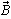

6.1.6.1. Намагниченность ферромагнетиков
К ферромагнитным материалам (сокращённо ферромагнетикам) относят сплавы на основе железа, никеля, кобальта и других редкоземельных элементов, их соединения; сплавы и соединения марганца, хрома, а также пластические и другие композиции с включением порошков ферромагнитных металлов (ферриты).
Свойства ферромагнитных материалов определяются значением абсолютной магнитной проницаемости ma = /, где ma = m0m, а m - относительная магнитная проницаемость материала. Наиболее распространённые ферромагнетики – это сплавы на основе железа с добавками Ni, Co, или на основе кобальта (Co) с крупнозернистой структурой (с зернами-доменами размером 10-3 нм и объёмом 10-9...10-10 нм3) и с относительной магнитной проницаемостью m = ma/m0 = 500...5000 и более.
При отсутствии магнитного поля самопроизвольная намагниченность доменов ориентирована хаотически и результирующее магнитное поле, образованное намагниченностью этих доменов, слабое (В » 0). Под действием внешнего магнитного поля наблюдается принудительная ориентация намагниченности доменов по направлению внешнего магнитного поля и усиление результирующего магнитного потока.